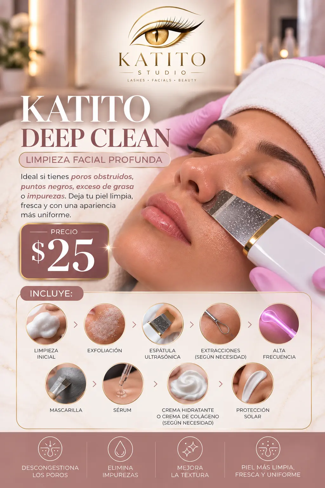
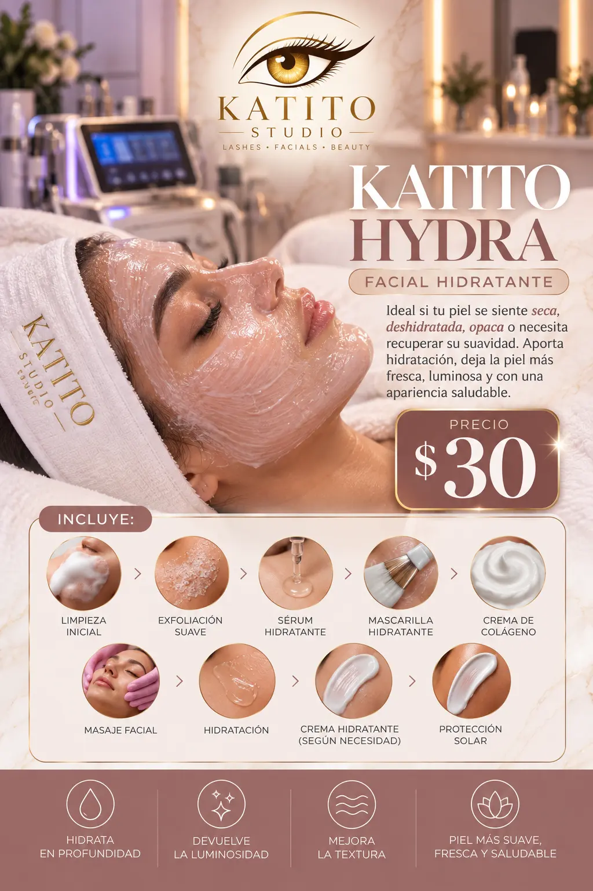
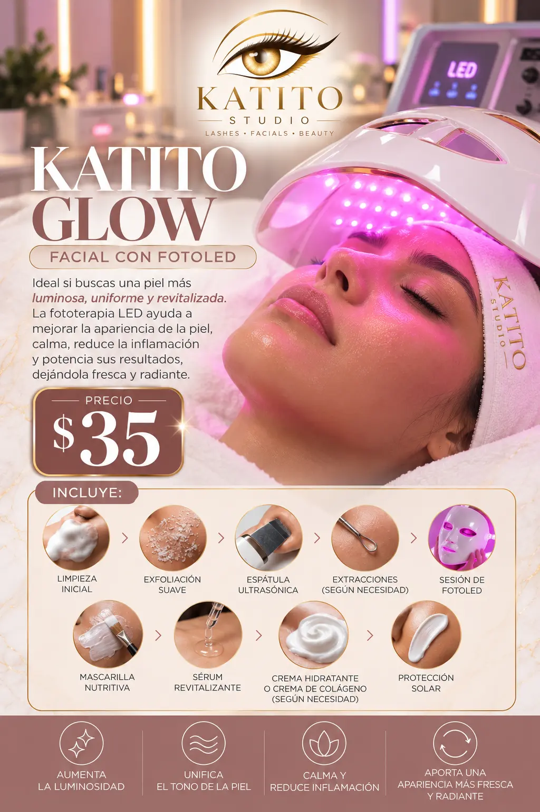
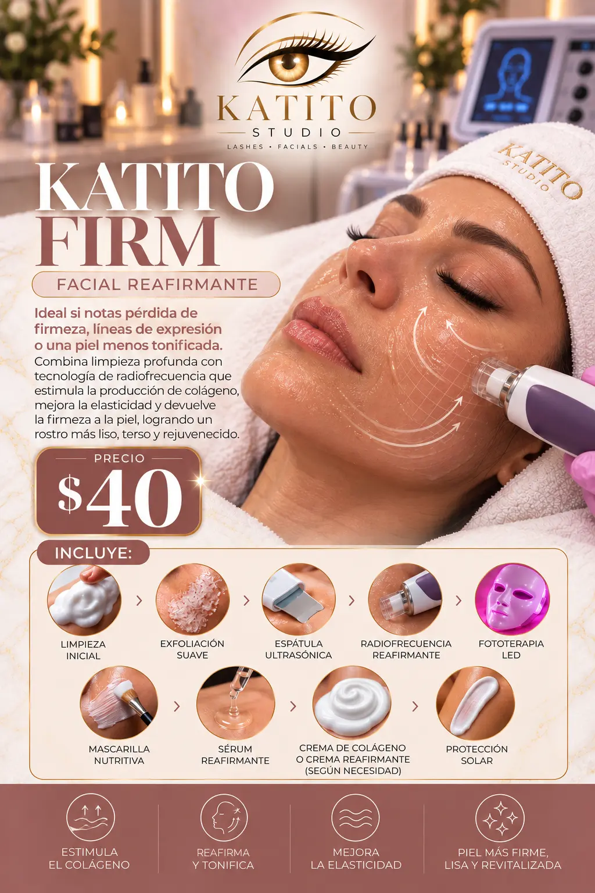
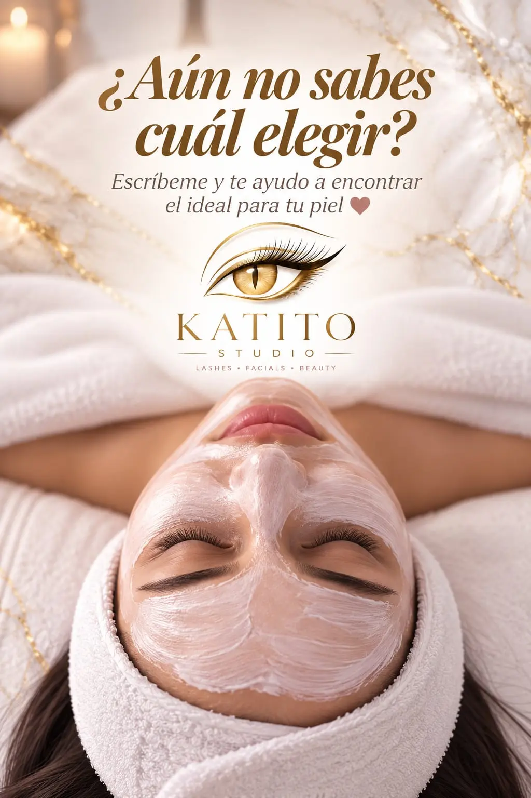

Katito Express
$15Limpieza, tónico, espátula ultrasónica, hidratación y protector solar.
BEAUTY · LASHES · SKIN
Donde tu belleza se convierte en arte. Cuidado facial, pestañas y cejas para mujeres y hombres, frente al Parque Cuscatlán.

Tu momento. Tu piel. Tu brillo.
MENÚ DE CUIDADO FACIAL
Todos los precios están en USD. Selecciona un servicio para comenzar tu reserva.
Limpieza, tónico, espátula ultrasónica, hidratación y protector solar.

Limpieza facial profunda para poros obstruidos, puntos negros, exceso de grasa o impurezas.

Facial hidratante para piel seca, deshidratada u opaca; ayuda a recuperar suavidad y luminosidad.

Facial con FotoLED para una piel más luminosa, uniforme, calmada y revitalizada.

Facial reafirmante con radiofrecuencia y fototerapia LED para estimular el colágeno y mejorar la firmeza.
$12 · Realza tu mirada con una aplicación personalizada.
$10 · Cejas definidas, ordenadas y con efecto natural.

BELLEZA · TECNOLOGÍA · CONFIANZA
Cada cita comienza con una recomendación según tu piel y el resultado que buscas. Nuestros tratamientos combinan limpieza, hidratación y tecnología facial.
PREGUNTAS FRECUENTES
Información sobre reservas, tratamientos y nuestra ubicación en San Salvador.
Elige tu servicio, fecha y hora en el formulario. Enviaremos la solicitud por WhatsApp y confirmaremos la disponibilidad contigo.
No. Puedes solicitar tu cita sin depósito; queda confirmada cuando Katito Studio responda tu mensaje.
Sí. Nuestros faciales, pestañas y servicios de cejas son unisex.
Express es una limpieza rápida; Deep Clean trabaja impurezas y poros; Hydra aporta hidratación; Glow combina cuidado facial y FotoLED; Firm incorpora radiofrecuencia y fototerapia LED. Al llegar también podemos orientarte según tu piel.
Estamos en Condominios Cuscatlán, 4.ª Calle Poniente, 2.º nivel, local 220, frente al Parque Cuscatlán, San Salvador. Atendemos de lunes a sábado de 8:00 a. m. a 6:00 p. m.; domingo únicamente con cita previa.
RESERVA SIN DEPÓSITO
Completa los datos y enviaremos tu solicitud por WhatsApp. Katito Studio confirmará la hora disponible.
VISÍTANOS
¿Prefieres escribirnos directamente?
WhatsApp · 7013-8750 Instagram · @katito.studio TikTok · @katito.studio